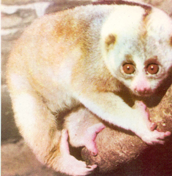
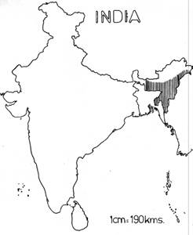

|
Digitized
Inventory of Animal Resources: Mammalia |
Taxonomic
Details
----- Scientific Name
----- Classification
----- Synonyms
----- Common Names
Other
Biological Details
----- Habit and
Habitat
----- Distribution
---------- Extent of
Occurrence
---------- Area of
occurrence
---------- Altitude
---------- Population
-----
Conservation Status
-----
Diagnostic
Features
-----
Breeding system
Miscellaneous
Information
Literature
Scientific Name : Nycticebus coucang (Boddaert)
Family :
Classification:
Order:
Primates
Synonyms:
New
name Nycticeus bengalensis (Lacepede) propsed by Grover (2001)
Common Names: Slow
Loris; Regional Names: (Hindi)
Sharmindi Billi, (Bengali) Lagawnati banar
Threats : Human Interference, Loss of Habitat, Trade, Hunting, Developmental activates, Tree felling and jhoom cultivation activities.; Effect of threats on population (Perceived or inferred): Declining
Trade: Domestic.; Parts in trade: Live animals , Organs.; Effect of trade on population (Perceived or inferred): Declining
Slow Loris is a very seclusive nocturnal creature. It seldom comes on ground sleeping during day time in holes and cracks of trees. Feeds chiefly on leaves, young shoots, fruits, insects. Breeds all the year round and gives birth to single, or rarely twin individuals. At birth, body is fully covered with fur and eyes are open.
Habitat Structure: Tropical evergreen rain forest and semi-evergreen forest. The slow Loris is a upper and middle canopy dweller in dense forest.
South of Brahmaputra river in Northeastern India
Locations : No; of locations : Many; Type : Isolated
Extent of Occurrence 10001-20000
sq.kms.
Area of occurrence:
501-2000
sq.kms.
Altitude:
50-1300
m
Population:
Global Population: Not Known; No. of mature individuals in all the populations: Not known
Captive Population: Males: 14 + Females: 6 + Unsexed: 1 = 21, in nine Indian Zoos. (ENVIS Report of WII, 2001). Males: 45 + Females: 46 + Unsexed: 1 = 92 in 30 zoos abroad (CAMP Report, 1998).
Life span: (Wild): 10 years; (Captivity): 12 years
Population Trend: Declining, General Decline.
Conservation status:
Non-Endemic species; Data Deficient
CITES
APPENDIX: II; Indian
Wildlife (Protection) Act (1972) (As amended
up to
2002): Schedule I; Part I; Indian
Red Data Book (IUCN, 1994): Insufficiently Known.; IUCN
(1998) (Proposed): Lower Risk-Near Threatened (National).; IUCN
(2002) (Proposed): Data Deficient (Global) based on Version 2.3 (1994)
(IUCN,2003).;
Measurements: (In mm): Head and Body Length: Male: 265-380, Female: 268-335.
Weight: (In Kg) Male: 0.85-1.67, Female: 0.9-1.32.
Breeding system:.
Intraspecific variations: Out of four recognized subspecies only one (bengalensis) occurs in India. Groves (2001) has proposed to raise the status of bengalensis to the species level with suggestion that coucang is an extralimital species. Therefore, confirmation of taxonomic status has become essential for this species.
Sighting Records: Type of Sighting: Direct and Indirect; Field Notes: Recent studies carried out in N.E. India by Jayantha Das, Dilip Chetry, J. Biswas, Rekha Medhi and Joydeep Bose under the project entitled,"Status and Distribution of non-Human primates in NE India." during 1994-1999 reported direct and indirect sighting records.
Taxon related studies recommended: Survey, Monitoring and Life History studies.
Remarks: In CAMP Workshop conducted in India in 2003 the IUCN conservation status of the species was assessed as Data Deficient (National) based on IUCN Version 3.1. (CAMP Report, 2003).


Anonymous. 1994 The Red Data Book on Indian Animals: Part–I Vertebrata 534pp. Publisher: Zoological
survey of India, Kolkata.
Groves C. 2001 Primate Taxonomy Publisher: List
of the Primates from the IUCN Red List 2000.
Gupta, A. K., 1999 Non- Human
primates of India- ENVIS Bulletin : Wildlife & Protected Areas 1(1): 233pp. Publisher: Wildlife
Institute of India, Dehra Dun.
Molur Sanjay, Brandon-Jones Douglas, Dittus Wolfgang, Eudey Ardith, Kumar Ajith,
Singh Mewa, Feeroz, M. M., Chalise Mukesh, Priya Padma, Walker Sally 2003 Status
of South Asian Primates: Conservation Assessment and Management Plan (C.A.M.P.)
Workshop Report, 2003 viii+432pp. Publisher: Zoo Outreach
Organization/CBSG-South Asia, Coimbatore, India:
Molur, S.; Nameer, P. O. and Walker, S. 1998 Report of the Workshop “ Conservation Assessment and Management plan
for Mammals of India.” (BCPP- Endangered Species Project),
176pp. Publisher: Zoo Outreach Organisation, Conservation Breeding
Specialist Group India, Coimbatore, India.
Roonwal M. L. and Mohnot, S. M. 1977 Primates of South Asia 421pp. Publisher: Harvard
University Press, U. K.
Tikader . B. K. 1983 Threatened
Animals of India 307pp. Publisher: Director, Zoological
survey of India, Kolkata.